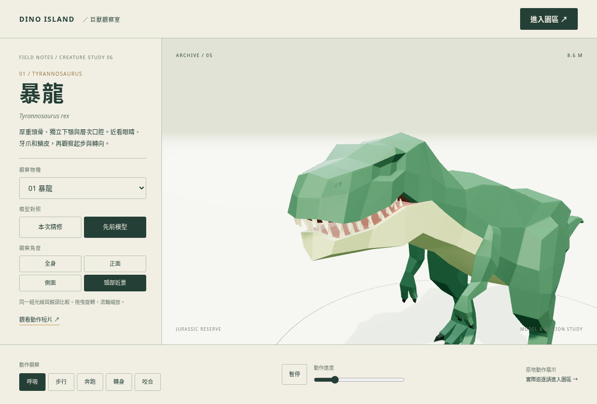
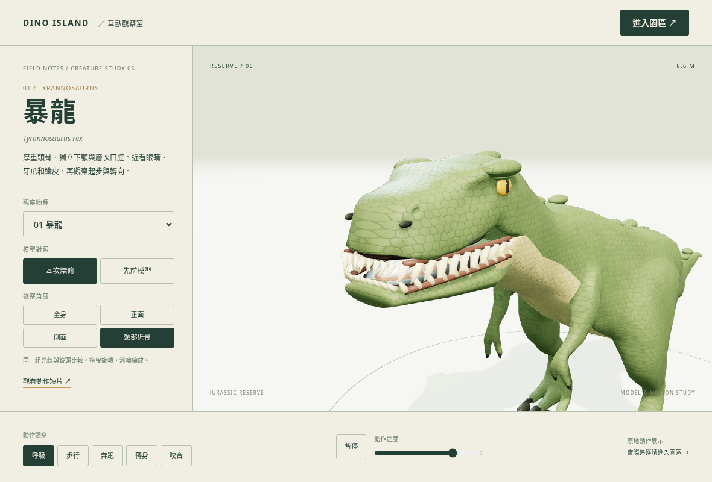
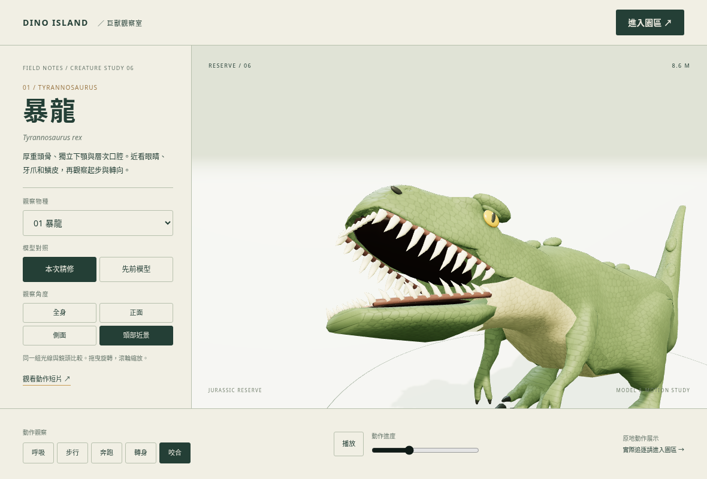
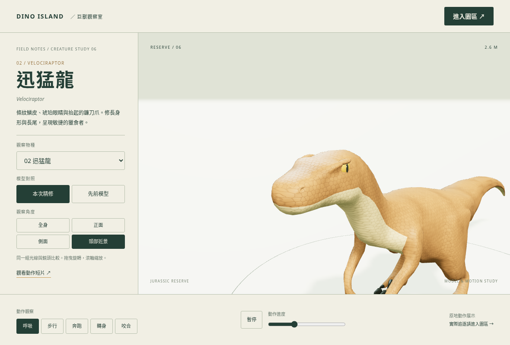
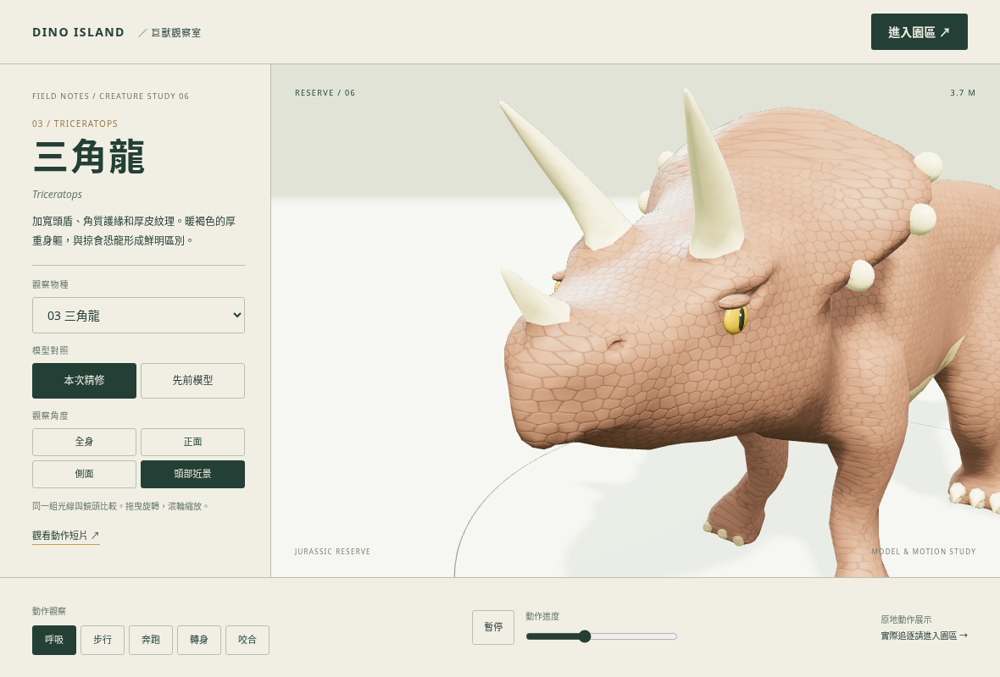
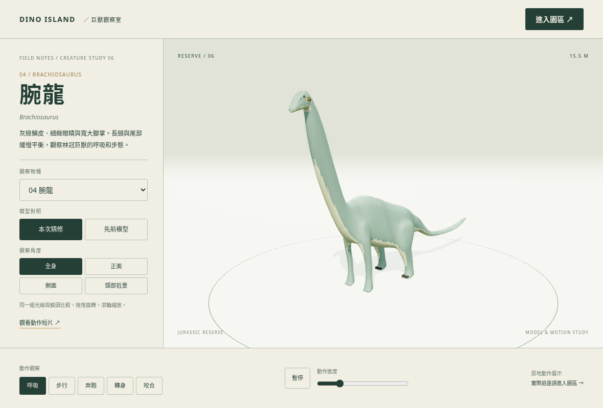
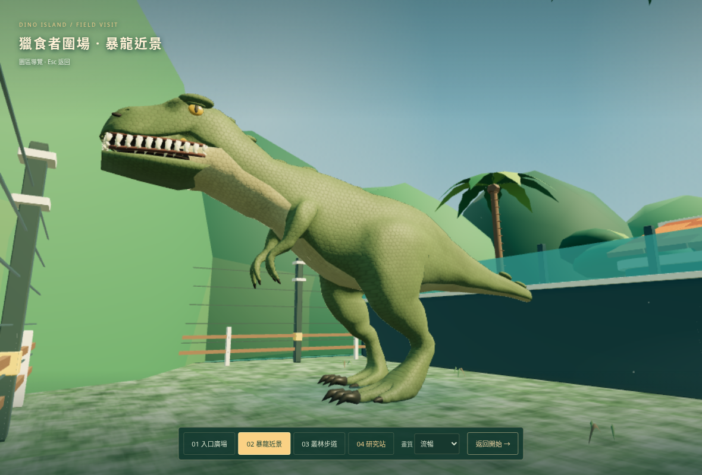

巨獸的輪廓、鱗皮與重量
暴龍頭顎與口腔重建，四物種的皮膚、眼睛與細節，以及共享於遊戲和觀察室的動作反應。
打開可旋轉觀察室 ↗進入遊戲 ↗暴龍近景 · 新舊模型



12 秒模型動作檢視
步行、奔跑、轉身、咬合。使用觀察室的實際 GLB、動畫與動作程式逐格輸出；原地模型展示，非玩家追逐錄影。影片無聲。
其他物種



放回園區

這輪沿用原有基本體型與主要動畫，再修改幾何、材質與動作。沒有完整足部 IK。軟體繪圖畫面不代表實體裝置效能。